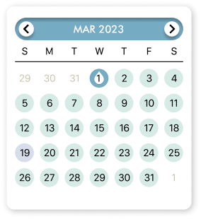
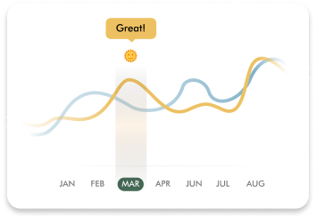

Haworthiopsis attenuata
Keep track of the last time you watered:
Water log


You’ve watered every day this week!
Tracking “Twister” over time:

Tip: Twister thrives in bright indirect to direct light!
Healthy plants, happy life!
Keep an eye on Twister’s soil health

Potassium (K) 10%
Phosphorous (P) 10%
Nitrogen (N) 10%
Tip: Choosing the right fertilizer is important for your plants health. The next time you’re out for fertilizer for Twister, just remember “10-10-10”.